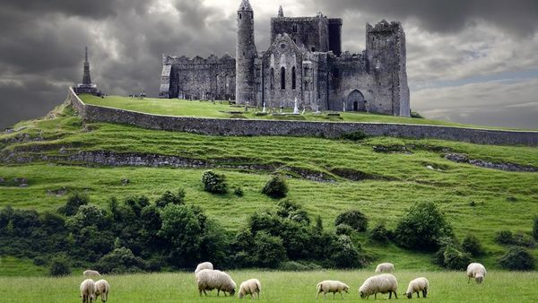

Париж виріс із поселення кельтського племені в римське місто Лютецію, а згодом став столицею Франції та релігійно-освітнім центром Європи. Зазнавши грандіозної перебудови у XIX столітті з появою широких бульварів та Ейфелевої вежі, він зберіг свою велич і перетворився на світову столицю культури, моди та туризму.

Швейца́рія (також Швайцáрія; нім. die Schweiz, фр. la Suisse, італ. Svizzera, ромш. Svizra), офіційна назва Швейца́рська Конфедера́ція — держава, розташована на стику Західної, Центральної та Південної Європи. Федеративна республіка, що складається з 26 кантонів, з федеральною владою у Берні. Країна не має виходу до моря і межує з Італією на півдні, Францією на заході, Німеччиною на півночі та Австрією і Ліхтенштейном на сході. Географічно розділена Швейцарським плато, Альпами та Юрами й охоплює загальну площу у 41 285 км², з яких площа суші — 39 997 км². У той час як Альпи займають більшу частину країни, населення Швейцарії, яке складає близько 8,5 мільйонів, зосереджено переважно на Швейцарському плато, де розташовані найбільші міста, зокрема три головні економічні центри: Цюрих, Женева та Базель.

Ірла́ндія (ірл. Éire — МФА: [ˈeːrʲə], англ. Ireland), також знана як Республіка Ірландія (ірл. Poblacht na hÉireann, англ. Republic of Ireland) — держава в північно-західній Європі, що охоплює 26 з 32 графств (5/6 території) острова Ірландія. Вислів «Республіка Ірландія» (ірл. Poblacht na hÉireann) є лише характеристикою держави, проте не її назвою. Столиця — місто Дублін, розміщене у східній частині острова. Близько 40 % з 4,9 мільйонного населення країни проживає у Дублінській агломерації. Суверенна держава розділяє свій єдиний наземний кордон з Північною Ірландією, що перебуває під владою Об'єднаного Королівства. Окрім того, вона оточена Атлантичним океаном, з Кельтським морем на півдні, протокою Святого Георгія на південному сході та Ірландським морем на сході.